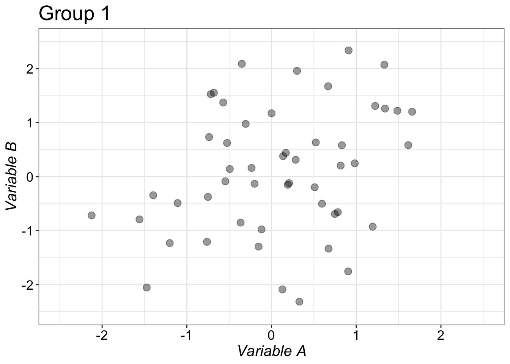
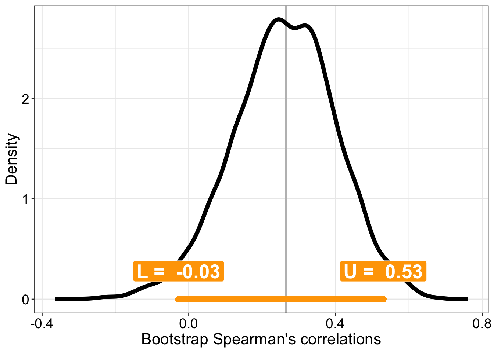
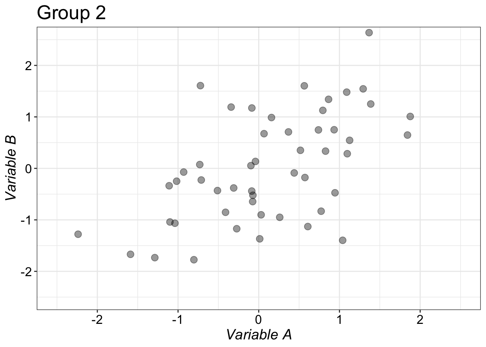
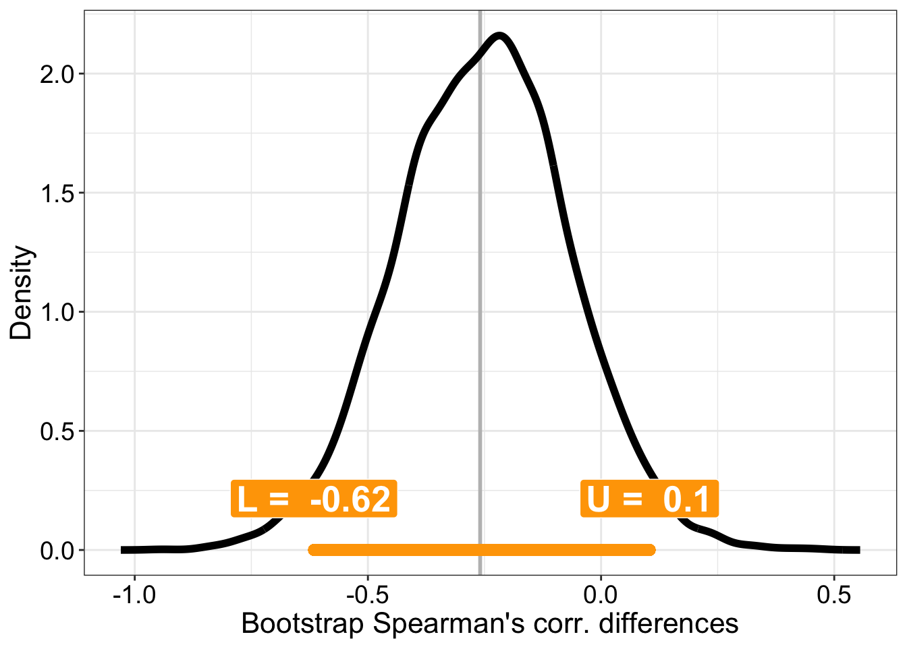
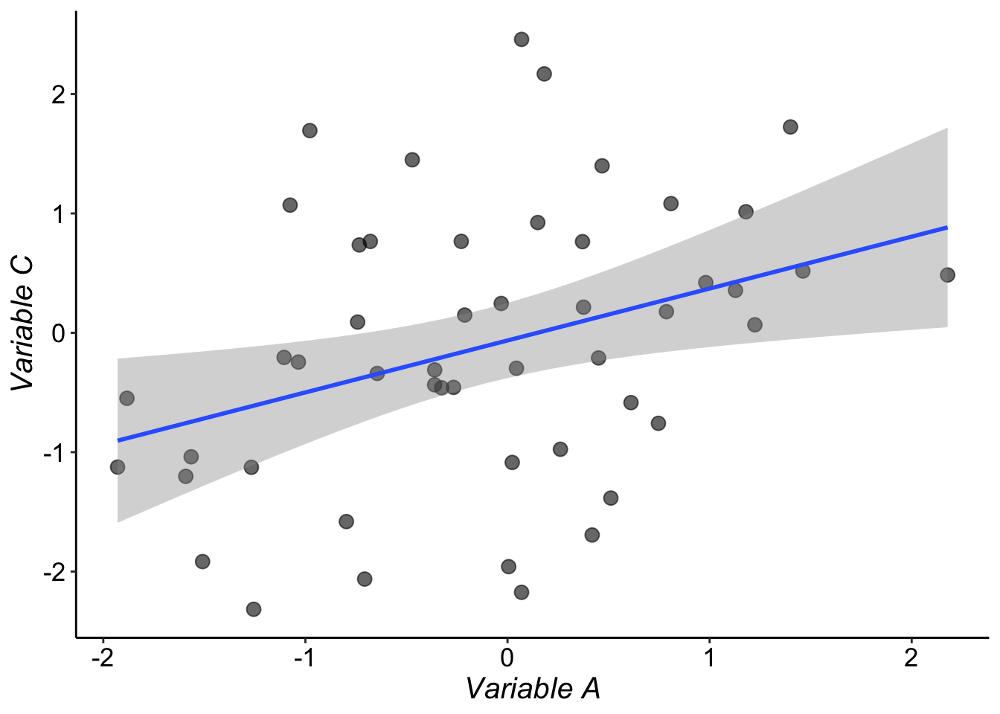
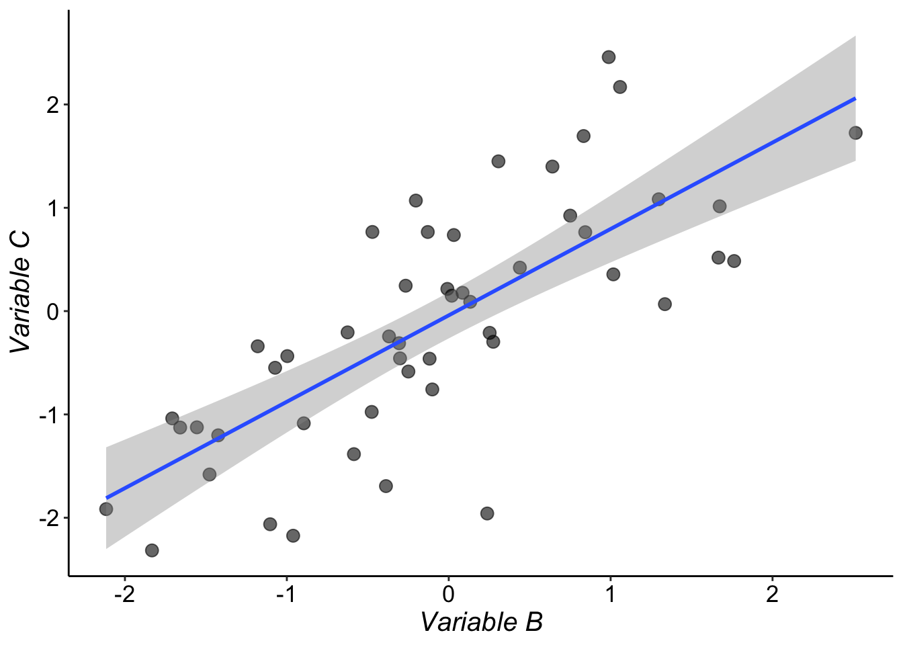

# dependencies
library(ggplot2)
library(tibble)
source("./code/theme_gar.txt")
source("./code/Rallfun-v35.txt")In this example we sample from 2 weakly correlated variables. Changing the random seed or commenting out the line set.seed(21) will give different results. You can also change the population correlation by changing rho.
set.seed(21)
n <- 50 # sample size
mu <- c(0, 0) # means of the variables
rho <- 0.2 # population correlation between variables
sigma1 <- matrix(c(1, rho, rho, 1), nrow = 2, byrow = TRUE) # covariance matrix
# group 1
data <- MASS::mvrnorm(n = n, mu = mu, Sigma = sigma1)
x1 <- data[,1]
y1 <- data[,2]# make data frame
df <- tibble(x = x1,
y = y1)
# ggplot figure
p <- ggplot(df, aes(x = x, y = y)) + theme_gar +
geom_point(alpha = 0.4, size = 3) +
coord_cartesian(xlim = c(-2.5, 2.5), ylim = c(-2.5, 2.5)) +
theme(axis.title = element_text(size = 15, colour = "black"),
axis.text = element_text(size = 13, colour = "black"),
strip.text = element_text(size = 15, face = "bold")) +
labs(x = expression(italic("Variable A")), y = expression(italic("Variable B"))) +
ggtitle("Group 1")
pA <- p
p
For this sample, Spearman’s correlation coefficient is 0.26.
set.seed(21)
nboot <- 5000 # number of bootstrap samples
alpha <- 0.05 # alpha level for confidence interval
boot.corr1 <- vector(mode = "numeric", length = nboot) # vector of bootstrap correlations
for(B in 1:nboot){
boot.id <- sample(n, size = n, replace=TRUE) # bootstrap pairs of observations
boot.corr1[B] <- spear(x1[boot.id], y1[boot.id])$cor
}corci1 <- quantile(boot.corr1, probs = c(alpha/2, 1-alpha/2))pval <- sum(boot.corr1 < 0)/nboot
pval <- 2 * min(pval, 1 - pval)The bootstrap results can be obtained by calling the R command: corb(x1,y1, corfun = spear, SEED = FALSE). The argument corfun can be changed from spear to another correlation function, such as pbcor for a percentage bend correlation or wincor for a Winsorized correlation. For bootstrap inferences about the non-robust Pearson’s correlation, a modified bootstrap technique is required, which is implemented in the function pcorb.
cor1 <- spear(x1, y1)$cor
df <- as_tibble(with(density(boot.corr1),data.frame(x,y)))
p <- ggplot(df, aes(x = x, y = y)) + theme_gar +
geom_vline(xintercept = cor1, colour = "grey", size = 1) +
geom_line(size = 2) +
labs(x = "Bootstrap Spearman's correlations", y = "Density") +
# confidence interval ----------------------
geom_segment(x = corci1[1], xend = corci1[2],
y = 0, yend = 0,
lineend = "round", size = 3, colour = "orange") +
annotate(geom = "label", x = corci1[1], y = 0.1*max(df$y), size = 7,
colour = "white", fill = "orange", fontface = "bold",
label = paste("L = ", round(corci1[1], digits = 2))) +
annotate(geom = "label", x = corci1[2], y = 0.1*max(df$y), size = 7,
colour = "white", fill = "orange", fontface = "bold",
label = paste("U = ", round(corci1[2], digits = 2)))
pB <- p
p
For simulations on the (large) sample sizes needed to precisely estimate correlation analyses, see this blog post. To see why conditioning correlation results on P values can lead to a literature full of false positives, see this blog post. Finally, simulations of statistical power for correlation analyses are available here.
In this situation, we have 2 groups, for each group we measure variables A and B and then estimate their correlations.
twopcor(x1,y1,x2,y2, SEED = FALSE)twocor(x1,y1,x2,y2, corfun = pbcor)set.seed(777)
# group 2
rho <- 0.5 # correlation between variables
sigma2 <- matrix(c(1, rho, rho, 1), nrow = 2, byrow = TRUE) # covariance matrix
data <- MASS::mvrnorm(n = n, mu = mu, Sigma = sigma2)
x2 <- data[,1]
y2 <- data[,2]# make data frame
df <- tibble(x = x2,
y = y2)
# ggplot figure
p <- ggplot(df, aes(x = x, y = y)) + theme_gar +
geom_point(alpha = 0.4, size = 3) +
coord_cartesian(xlim = c(-2.5, 2.5), ylim = c(-2.5, 2.5)) +
theme(axis.title = element_text(size = 15, colour = "black"),
axis.text = element_text(size = 13, colour = "black"),
strip.text = element_text(size = 15, face = "bold")) +
labs(x = expression(italic("Variable A")), y = expression(italic("Variable B"))) +
ggtitle("Group 2")
pC <- p
p
For this sample, Spearman’s correlation coefficient is 0.52.
Bootstrap samples are obtained independently in each group. Pairs of observations are sampled with replacement.
set.seed(21)
nboot <- 5000 # number of bootstrap samples
alpha <- 0.05 # alpha level for confidence interval
boot.diff <- vector(mode = "numeric", length = nboot) # vector of bootstrap correlations
for(B in 1:nboot){
boot.id1 <- sample(n, size = n, replace=TRUE) # bootstrap pairs of observations in group 1
boot.id2 <- sample(n, size = n, replace=TRUE) # bootstrap pairs of observations in group 2
boot.diff[B] <- spear(x1[boot.id1], y1[boot.id1])$cor - spear(x2[boot.id2], y2[boot.id2])$cor
}diff.ci <- quantile(boot.diff, probs = c(alpha/2, 1-alpha/2)) # [-0.616, 0.104]pval <- sum(boot.diff < 0)/nboot
pval <- 2 * min(pval, 1 - pval) # 0.1644The bootstrap results can be obtained by calling the R command: twocor(x1,y1,x2,y2, corfun = spear). To compare two percentage bend correlations, use this command instead: twocor(x1,y1,x2,y2, corfun = pbcor). And to compare two Pearson’s correlations: twopcor(x1,y1,x2,y2, SEED = FALSE).
corr.diff <- spear(x1, y1)$cor - spear(x2, y2)$cor
df <- as_tibble(with(density(boot.diff),data.frame(x,y)))
p <- ggplot(df, aes(x = x, y = y)) + theme_gar +
geom_vline(xintercept = corr.diff, colour = "grey", size = 1) +
geom_line(size = 2) +
labs(x = "Bootstrap Spearman's corr. differences", y = "Density") +
# confidence interval ----------------------
geom_segment(x = diff.ci[1], xend = diff.ci[2],
y = 0, yend = 0,
lineend = "round", size = 3, colour = "orange") +
annotate(geom = "label", x = diff.ci[1], y = 0.1*max(df$y), size = 7,
colour = "white", fill = "orange", fontface = "bold",
label = paste("L = ", round(diff.ci[1], digits = 2))) +
annotate(geom = "label", x = diff.ci[2], y = 0.1*max(df$y), size = 7,
colour = "white", fill = "orange", fontface = "bold",
label = paste("U = ", round(diff.ci[2], digits = 2)))
pD <- p
p
cowplot::plot_grid(pA, pC, pB, pD,
labels = c("A", "C", "B", "D"),
ncol = 2,
nrow = 2,
label_size = 20,
hjust = -0.5,
scale=.95)
# save figure
# ggsave(filename=('./figures/nb6_fig_corr.pdf'),width=12,height=10)Simulations of false positives and power for correlation comparisons are reported in this blog post. Bottom-line: the Fisher’s r-to-z transform is not robust, and very large sample sizes are required to detect differences between correlation coefficients.
For instance, if we have 3 dependent variables, we want to compare the correlation between 1 and 3 to the correlation between 2 and 3.
Generate data
set.seed(21)
n <- 50 # sample size
mu <- c(0, 0, 0) # means of the variables
rho12 <- 0.8 # correlation between variables 1 and 2
rho13 <- 0.2 # correlation between variables 1 and 3
rho23 <- 0.6 # correlation between variables 2 and 3
# define covariance matrix
sigma <- matrix(c(1, rho12, rho13,
rho12, 1, rho23,
rho13, rho23, 1),
nrow = 3, byrow = TRUE)
data <- MASS::mvrnorm(n = n, mu = mu, Sigma = sigma)
x <- data[,1:2]
y <- data[,3]
# make data frame
df <- tibble(x = x[,1],
y = y)
# ggplot figure
ggplot(df, aes(x = x, y = y)) + theme_classic() +
geom_point(alpha = 0.6, size = 3) +
geom_smooth(method='lm',formula=y~x) +
theme(axis.title = element_text(size = 15, colour = "black"),
axis.text = element_text(size = 13, colour = "black"),
strip.text = element_text(size = 15, face = "bold")) +
# scale_x_continuous(limits = c(-4, 4),
# breaks = seq(-4, 4, 1)) +
labs(x = expression(italic("Variable A")), y = expression(italic("Variable C")))
# ggsave(filename = "./corr_samp_dep_ov1.pdf")
# make data frame
df <- tibble(x = x[,2],
y = y)
# ggplot figure
ggplot(df, aes(x = x, y = y)) + theme_classic() +
geom_point(alpha = 0.6, size = 3) +
geom_smooth(method='lm',formula=y~x) +
theme(axis.title = element_text(size = 15, colour = "black"),
axis.text = element_text(size = 13, colour = "black"),
strip.text = element_text(size = 15, face = "bold")) +
# scale_x_continuous(limits = c(-4, 4),
# breaks = seq(-4, 4, 1)) +
labs(x = expression(italic("Variable B")), y = expression(italic("Variable C")))
# ggsave(filename = "./corr_samp_dep_ov2.pdf")For Pearson correlation:
# x = matrix with 2 columns
# y = vector
TWOpov(x,y)
#TWOpovPV to get a p-valueFor a robust correlation:
twoDcorR(x,y, corfun=wincor, SEED=FALSE)For instance, if we have 4 dependent variables, we want to compare the correlation between 1 and 2 to the correlation between 3 and 4.
For Pearson correlation:
# x = matrix with 2 columns
# y = matrix with 2 columns
TWOpNOV(x,y)For a robust correlation:
twoDNOV(x,y, corfun=wincor, SEED=FALSE)
Guillaume A. Rousselet, 2019, University of Glasgow.